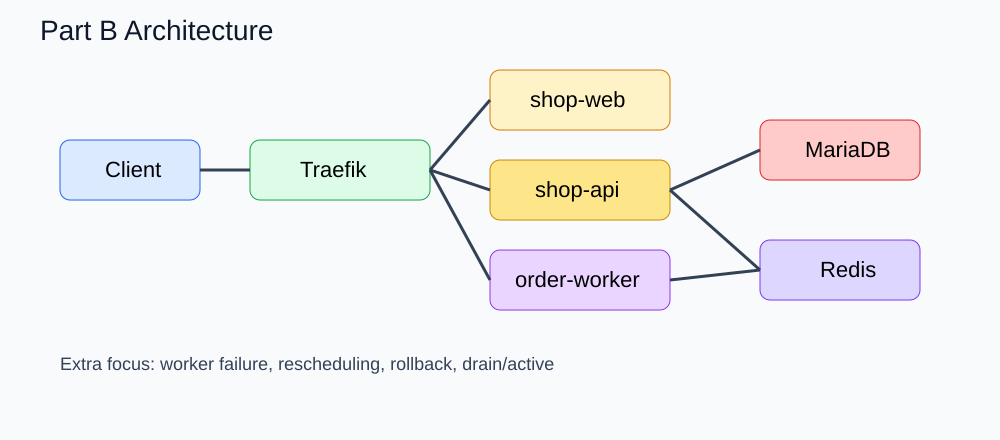

Part B는 Part A 위에 worker, 장애 유도, 재배치, rollback, 운영 복구 절차를 얹은 확장 실습입니다.
order-worker 가 포함된 스택 배포worker 는 Redis 의 orders 큐를 소비해 주문 후처리를 수행합니다.
docker stack deploy -c stack/base/stack-b.yml ecommerce-b
확인:
docker stack services ecommerce-b
docker stack ps ecommerce-b
docker service ps ecommerce-b_order-worker
curl -X POST http://MANAGER_HOST/api/orders \
-H 'Content-Type: application/json' \
-d '{"customer":"kim","items":[{"sku":"SKU-1001","qty":1}]}'
curl http://MANAGER_HOST/api/admin/queue
docker service logs -f ecommerce-b_order-worker
docker service scale ecommerce-b_order-worker=1
주문을 여러 건 넣고 backlog 가 쌓이는지 확인합니다.
curl http://MANAGER_HOST/api/admin/queue
FAIL_WORKER=true 같은 잘못된 환경값을 적용하거나 fault injection override 를 사용합니다.
docker stack deploy \
-c stack/base/stack-b.yml \
-c stack/overrides/stack-fault-injection.override.yml \
ecommerce-b
docker service ps ecommerce-b_order-worker
docker service logs ecommerce-b_order-worker
fault injection 을 제거하고 즉시 rollback 하거나 정상 stack 파일로 재배포합니다.
docker service update --rollback ecommerce-b_order-worker
또는
docker stack deploy -c stack/base/stack-b.yml ecommerce-b
worker 가 올라가 있는 노드를 확인한 뒤 해당 노드를 drain 합니다.
docker service ps ecommerce-b_order-worker
docker node update --availability drain swarm-worker2
확인:
docker node inspect swarm-worker2 --pretty
docker service ps ecommerce-b_order-worker
일부러 존재하지 않는 태그를 지정해봅니다.
docker service update --image REGISTRY/order-worker:broken ecommerce-b_order-worker
그 후 즉시 rollback 합니다.
docker service update --rollback ecommerce-b_order-worker
공식적으로 rolling update 와 rollback 제어는 docker service update 옵션으로 다룹니다 Docker Docs.
worker 에 zone label spread 를 적용해 보고 task 분산을 관찰합니다. preference 는 best effort 이므로 완벽한 강제는 아니며, constraints 와 다르게 배치 실패를 강제하지 않습니다 Docker Docs.
api-feature-flags-v1.json 을 v2 로 교체하고 /api/config 응답 차이를 확인합니다.
새 secret 을 만들어 stack 재적용으로 반영합니다.
docker service ps 로 확인docker stack rm ecommerce-b
Part B의 핵심은 장애 자체가 아니라, 장애를 운영 명령으로 관찰하고 통제하는 과정입니다. 실무에서는 이 순서를 반복적으로 몸에 익히는 것이 중요합니다.